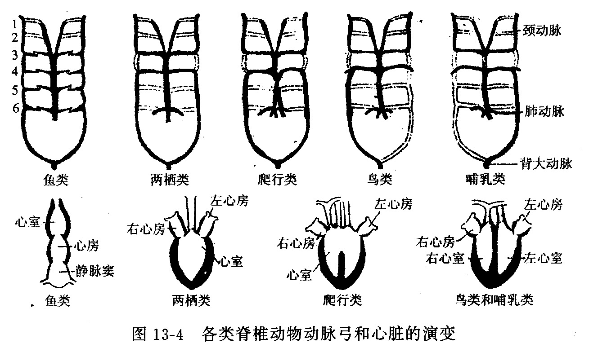

心脏演化是脊椎动物循环系统演化的核心线索，体现了从单循环到双循环的进步：
| 类群 | 心脏结构 | 血液特点 |
|---|---|---|
| 圆口类/鱼类 | 一心房一心室，静脉窦、动脉圆锥 | 全为缺氧血，单循环 |
| 两栖类 | 两心房一心室（心室未完全分隔） | 不完全双循环，混合血 |
| 爬行类 | 两心房两心室（室间隔不完全，鳄类有潘氏孔） | 不完全双循环 |
| 鸟类/哺乳类 | 四腔心脏，完全分隔 | 完全双循环，动静脉血不混合 |
动脉弓演化（极高频考点）——胚胎期六对动脉弓（I–VI）在不同类群中的演化命运如下：
| 动脉弓 | 鱼类 | 两栖类 | 爬行类/鸟类 | 哺乳类 |
|---|---|---|---|---|
| I | 退化 | 退化 | 退化 | 退化 |
| II | 退化 | 退化 | 退化 | 退化 |
| III | 参与鳃动脉 | 颈动脉 | 颈动脉 | 颈动脉 |
| IV | 参与鳃动脉 | 体动脉弓（左、右） | 右体动脉弓 | 左体动脉弓（主动脉弓） |
| V | 参与鳃动脉 | 退化 | 退化 | 退化 |
| VI | 参与鳃动脉 | 肺皮动脉 | 肺动脉 | 肺动脉 |
演化规律：

静脉系统演化：